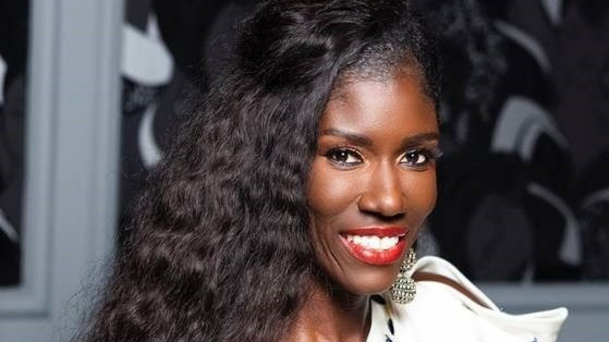
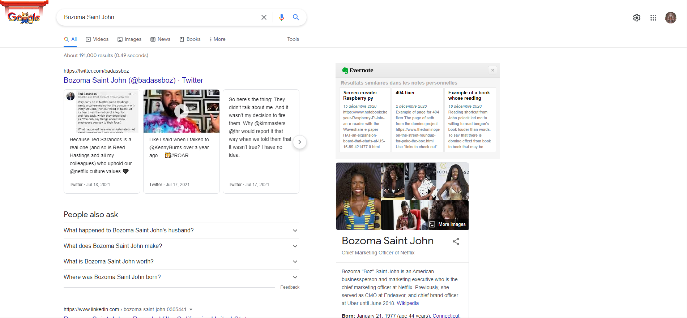

Women of Impact like Bozoma


Yesterday I have spent time and energy watching this excellent documentary from National Geographic. Women of Impact featured and pictured great women like Bozoma Saint John who with the skill they have gathered are making change happen. Oceanographists, Archeologists, Artists, Scientists,.. from all horizon and with different sets of skills I saw women doing work that matter for us, human beings, but not only but for elephants, chimpanzees, … let’s just say for the whole universe. Just after I went to listen to Bozoma Saint John on the Harvard Business review channel where she reminded me of the importance of narrowing ourselves (personal branding perspective) and knowing who we are and what’s our purpose and value. The other piece that I have not heard of (I have not finished the talk) is the importance of Knowing who is it for but women of impact like Bozona know clearly that is important to clearly identify and define who is it for and start caring about those ones.
This is the Nth article of the Greyio Heart Experiment and this experiment is for Women of Impact like Bozoma Saint John, mbenda,…… all of these women who are standing up and showing us that their voices and works matter. These women are telling us that women stand for something important and indispensable for the well-being of our world. For those women of Impact, the Greyio Heart Experiment tries to highlight their works, passions, ideas, skills, and voices using words and images for the sake of contributing to the spreading of the message of women and for amplifying them with this almost infinite and cheap resource at our disposal, great words. These are for who the Greyio Heart Experiment is for. People like you and Bozoma Saint John.
Don't need to present the work of Bozoma Saint John because your friend google is better at presenting you bozoma

All that is enough to say is that Bozona is a woman of Impact and with The Badass Workshop, Bozona is helping people like US level UP and do work that matters for people who care.